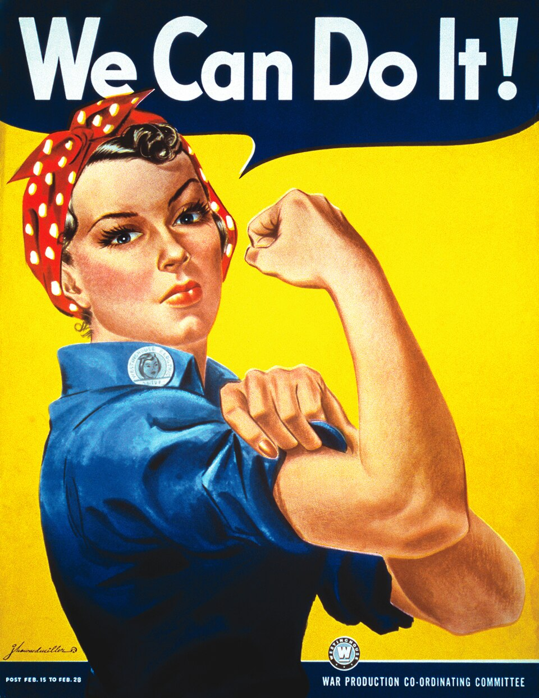
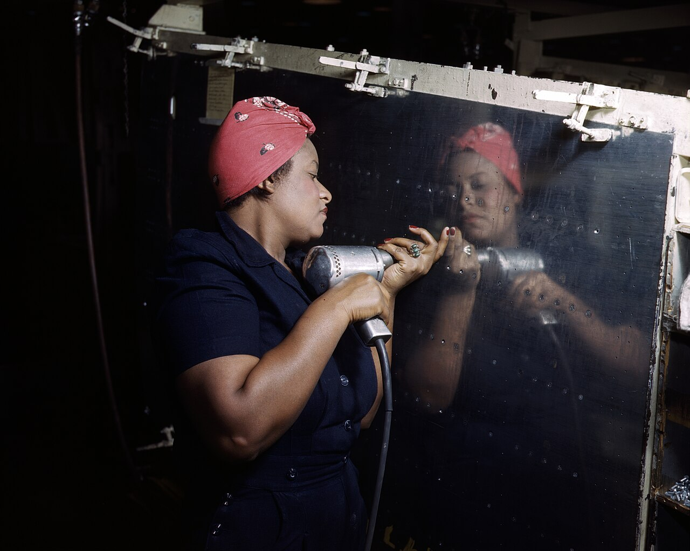

Clarksville, Indiana
Rosie the Riveter Statue in Ashland Park
The picture above is the 1943 Westinghouse poster, not the statue. The Rosie the Riveter statue in Ashland Park is a life-size copy of that flexed arm, on the Clarksville riverfront. Poster by J. Howard Miller, public domain, via Wikimedia Commons.
The Rosie the Riveter statue in Ashland Park is Clarksville's monument to Rose Will Monroe and to the women who kept American factories running in World War II. It stands on the Ohio River at 430 East Riverside Drive, Clarksville, Indiana 47129. The Weber Group of Sellersburg built it as a life-size photo-op in the flexed-arm pose. The town unveiled it at 4 p.m. on Friday, September 16, 2022. You can walk up, match her stance, and use the Louisville skyline as the backdrop.
Plan the stop430 East Riverside DriveAshland Park, Clarksville, Indiana 47129. Directions to the riverfront pin.Back to Indiana Parking and hours
At the river
- Place
- Ashland Park, 430 East Riverside Drive, Clarksville, Indiana 47129. The road is also the Ohio River Scenic Byway. Pin 38.27059, -85.75492.
- What you see
- A full-color, life-size Rosie the Riveter statue in an oversized frame, flexed arm up, Louisville across the Ohio.
- When
- Outdoors, no ticket. The figure is lit at night, so an evening photo works. Picnic and the Ohio River Greenway share this stop.
- Parking
- The Ashland Park lot is on Riverside Drive. From Court Avenue go west, turn left on Main Street, go south to the T, then right. The lot is on the left.
- Neighbor
- 415 East Riverside Drive, on the same park frontage, is The Widow's Walk Ice Creamery. Use it as a landmark, then walk to the frame.
- Dedicated
- September 16, 2022, by the Clarksville Historic Preservation Commission. Built by the Weber Group of Sellersburg.
The dedication
On September 1, 2022, the Town of Clarksville set the unveiling for 4 p.m. on Friday, September 16, in Ashland Park, overlooking the Ohio River. The Historic Preservation Commission had decided the year before that Clarksville's tie to Rose Will Monroe was overdue for a public mark. The ceremony plan included historical music, Rosie the Riveter look-alikes, and a color guard. Riverside Drive through the park was closed for the event. That day's overflow parking was a gravel lot at Market Street and Missouri Avenue, with golf carts for anyone who could not walk the last stretch. Those were dedication-day arrangements. A regular visit uses the park lot on Riverside Drive.
The September 19 account of the afternoon calls it standing room only. Historic Preservation Commission president Lynn Lewis told the crowd that the town council had given its blessing nine months earlier for a riverfront installation about Clarksville's own Rosie and the impact women made on the country during the war. The commission kept Monroe's family in the plans from the start. Her only living child, Vicki Will Croston, was there. So was her granddaughter, Cathy Avischious. Avischious told WDRB that the family always knew Rose was Rosie, and that it was simply part of who she was: a grandmother who drove a convertible and did not match a quiet baking picture. Relatives said they loved the statue and the town's decision to recognize her.
Town council president Ryan Ramsey spoke both as council president and as a member of the commission. He described Rosie as a figure of determination, grit, courage, patriotism, and a can-do spirit. The commission thanked more than 70 donors who gave more than 130,000 dollars. Of that, 40,000 dollars was a matching grant from the Indiana Housing and Community Development Authority's Placemaking Indiana Initiative. Donors at 10,000 dollars included Avant Garde, Samtec, SoIN Tourism, realtor Pat Harrison, and UAW Local 862. Donors at 5,000 dollars included Cornerstone Group, Duke Energy, Lochmueller Group, Friends of the Ohio River Greenway, and the Redeford family.
By November 4, 2022, the town was already pointing visitors at the finished work. The Weber Group, which won the town's design-build request, described a life-size replica in the celebrated flexed-arm pose, a photo-op at Ashland Park, 430 East Riverside Drive, with a clear view of the Louisville skyline. The dedication date on that account is September 16, 2022. A field report from the first week of November describes the same stop as a full-body, full-color figure in an oversized picture frame, lit at night, inviting people to copy the pose. The Historic Preservation Commission page now says the statue stands along the Ohio River in Ashland Park.
Rose Will Monroe
Rose Will Monroe was born in Pulaski County, Kentucky, in 1920. The town's dedication account says she was a 22-year-old widow with two children when she left Kentucky for a Ford Motor Company plant in Michigan, both to help the war and to feed her children. She worked as a riveter on B-24 bombers at the Willow Run factory in Ypsilanti, for the U.S. Army Air Forces. While she was on that line, bandleader Kay Kyser was introducing a song called Rosie the Riveter. The song itself was written in 1942 by Redd Evans and John Jacob Loeb. It was already popular when the plant chose Monroe for a promotional film about the home front.
The film chance had a Hollywood hook. Actor Walter Pidgeon came to Willow Run to sign a B-24 being built in his honor and to shoot encouragement to buy war bonds. People at the plant told him they already had their own Rosie the Riveter. Monroe was put in those films. A Hollywood picture titled Rosie the Riveter followed in 1944. Monroe was one real riveter among many. The name was a song, a poster culture, and a factory nickname before any single woman owned it. She became one of the women the country could point to.
After the war she moved to Clarksville and married again. She raised another child. She owned a home-construction company, drove a taxi, ran a beauty shop, and at 50 earned an airplane pilot's license. In 1978 an engine failure on takeoff ended her flying. She died in Clarksville on May 31, 1997, at 77. The statue is not in Michigan, where she riveted. It is in the Indiana town where she lived the rest of her life, on a riverbank her later neighbors still use.

Poster, painting, and the statue
Three different pictures share one nickname, and the Ashland Park statue follows only one of them. The flexed arm, the red bandana with white polka dots, and the speech of We Can Do It come from a poster drawn by J. Howard Miller for Westinghouse. It was shown to Westinghouse employees in the Midwest for about two weeks in February 1943. During the war the poster was not called Rosie. It was shop-floor encouragement for men and women already on the payroll, not a national recruiting bill. It then dropped out of sight for nearly forty years. In the early 1980s it was found again, tied to feminism, and often misnamed Rosie the Riveter.
The picture that carried the name Rosie in 1943 was Norman Rockwell's cover for The Saturday Evening Post on Memorial Day, May 29, 1943. Rockwell's worker is on a lunch break with a rivet gun in her lap, and a copy of Mein Kampf is under her shoe. That painting is not the pose in Ashland Park. If you arrive expecting Rockwell's lunch pail, you will miss the frame. Look for Miller's arm.
A riveter on a Vultee A-31 Vengeance in Nashville, February 1943. Alfred T. Palmer, Library of Congress, public domain. This is a wartime factory, not the Clarksville statue.
Indiana's wartime workforce
Monroe's rivets were driven in Michigan. Indiana had its own lines, and Clarksville sits in the middle of that map. Upstream at Charlestown, the smokeless-powder works of the Indiana Army Ammunition Plant pulled women into jobs that had often excluded them. The Indiana Historical Bureau's account of the plant says women started as mail runners and lab technicians and then replaced men as powder-cutting machine attendants. The bag-loading plant, known as HOP, employed 3,200 workers by December 1941, most of them women, sewing bags and packing them with powder. By 1942 so many women worked at the Charlestown plants that the town had to enlarge child care, including the nursery at the Pleasant Ridge community center. That is the home-front story a few miles from this statue: not a poster, a shift, a bag of powder, and a town that had to invent daycare because the workforce had changed.
Farther south and west, Evansville became one of the country's busy defense cities. The National Park Service, writing Evansville up as a World War II Heritage City, counts a shipyard that employed over 19,000 people at its peak and turned out 165 LSTs plus 35 other vessels, including ammunition lighters and oceangoing barges. Each LST from that yard was 300 feet long and 50 feet wide. The Evansville Ordnance Plant produced over 3 billion rounds of .45 caliber ammunition, about 96 percent of the quantity used under military and other defense contracts. Republic Aviation's Evansville plant built 6,242 P-47 Thunderbolts out of 15,683 made in all. The company hired 5,000 people there, and about 40 percent of the workers were women, up from 15 percent before the war. A shipyard voice in that same lesson remembers women welders on those hulls.
Put the Clarksville frame in that company and it reads more clearly. The Rosie the Riveter statue is a photo-op, and it is also a local claim: one of the women the song was about chose this Indiana city afterward. Charlestown's bag plant and Evansville's Thunderbolt line show the same war inside the state, with different tools. A visitor who only copies the arm still leaves knowing the name on the river belongs to Rose Will Monroe, and that Hoosier factories were full of women doing the same kind of work.
The Ohio River Greenway is the walk that ties the stop to the rest of the bank. SoIN Tourism lists the statue as a selfie on that greenway or a picnic in Ashland Park, and it calls Monroe one of the women presented as an official Rosie. Bring the pose, then give the park the manners of a riverfront that other people are using for a stroll. Do not climb the frame. The point of the installation is that you stand beside it.
A short visit
Come in daylight if you want the Louisville buildings sharp behind her, or after dark if you want the lighting the field report describes. Either way the stop is outdoors and free. The park lot on Riverside Drive is the ordinary place to leave a car. If you are coming from the Court Avenue side of town, the simple sequence is west on Court, left on Main, south to the river, right onto Riverside, and the lot on the left. The ice cream shop at 415 East Riverside Drive sits on that same frontage if you need a check that you are in the right block.
The dedication proved the town can fill the grass. A normal hour will not. Read the pose against the poster if you want the art lesson, then look across the river. Southern Indiana has other public history within a day's drive if the riverbank is only the first stop. The Constitution Elm in Corydon marks the old state capital. The William Hayden English statue is the Crawford County figure. The Vincennes riverwalk is a different Indiana river, the Wabash, with its own walk. This page stays with the Rosie the Riveter statue in Ashland Park.
Last verified .
Questions
Where is the Rosie the Riveter statue?
In Ashland Park at 430 East Riverside Drive, Clarksville, Indiana 47129, on the Ohio River. The same road is the Ohio River Scenic Byway. Louisville is across the water. Use the Ashland Park lot on Riverside Drive.
Who does the Ashland Park statue honor?
Rose Will Monroe, born in Pulaski County, Kentucky, in 1920. She riveted B-24 bombers at Willow Run in Michigan and appeared in war-bond films. She later lived in Clarksville, ran a construction company, drove a taxi, kept a beauty shop, and earned a pilot license. She died in Clarksville on May 31, 1997, at 77.
When was it dedicated, and who built it?
The Clarksville Historic Preservation Commission unveiled it at 4 p.m. on Friday, September 16, 2022. The Weber Group of Sellersburg built the life-size photo-op. More than 70 donors gave more than 130,000 dollars, including a 40,000 dollar matching grant from the Indiana Housing and Community Development Authority.
Can I take a photo at night?
Yes. The figure is outdoors, full color, and lit at night, set in an oversized frame in the flexed-arm pose with the Louisville skyline behind it. Stand with the frame, copy the pose if you want, and leave the installation as you found it.
Sources
- Town of Clarksville, 19 September 2022. The dedication, Monroe's Clarksville years, the donors, and the family.
- Town of Clarksville, 1 September 2022. The 4 p.m. unveiling in Ashland Park and the Weber Group.
- Town of Clarksville, 4 November 2022. Life-size pose, photo-op, and 430 East Riverside Drive.
- Clarksville Historic Preservation Commission. The statue along the Ohio River in Ashland Park.
- SoIN Tourism. The listing for the Rosie the Riveter statue in Clarksville.
- Roadside America. Frame, night lighting, and the Riverside Drive park lot.
- Rosie the Riveter. Monroe's birth and death, Willow Run, the 1942 song, the Miller poster, and the Rockwell cover.
- Indiana Historical Bureau. Women workers at the Charlestown powder plants.
- National Park Service. Evansville shipyard, ordnance, and P-47 production.
Link to https://testedprofit.com/IN/Rosie%20the%20Riveter%20Statue/.